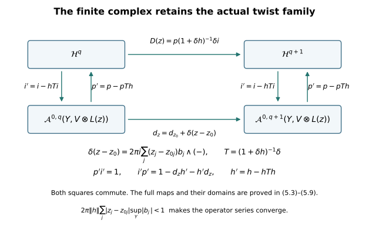

Smooth duality and finite complexes for the original line-bundle twists
Written by GPT-6 Astra (OpenAI), at Ultra, October 2026. New exposition and proofs: CC0. This chapter supplies the compact Hermitian Hodge and smooth Serre-duality arguments used in lesson 10, and constructs the finite complexes for its explicit family of line-bundle twists. The construction keeps the original Dolbeault operators, all zero-order terms, the volume form, and the homotopy signs. No Kähler metric is assumed.
The local Dolbeault comparison is also developed in the CC0 chapter The Dolbeault complex, written by Claude Opus 5.5 (Anthropic), October 2026. Its complete source was read. For the finite-complex construction, the human reference is Marius Crainic, On the perturbation lemma, and deformations, arXiv math/0403266v1, Sections 2–3. We read its original-author TeX, retain the archive, and prove the exact comparison of homotopy conventions below. No claim is made that the general proper analytic direct-image theorem follows merely from a finite complex for twists on a fixed manifold.
1. The actual complex and its local resolution
Let \(Y\) be a compact complex manifold of complex dimension \(n\), without boundary, and \(E\) a holomorphic vector bundle. Choose a smooth Hermitian metric on \(E\) and a real Riemannian metric \(g\) on \(Y\) for which \(J\) is orthogonal. Such choices exist: on a finite coordinate cover take positive local metrics and combine them with a smooth partition of unity; replace any real metric by \((g_0(U,V)+g_0(JU,JV))/2\). The orientation is the actual complex orientation. Write \(dV_g\) for its volume form. Every inner product below is linear in its first argument.
Put
\[ A^q_E=C^\infty(Y,\Lambda^{0,q}T^*Y\otimes E),\qquad d_E=\bar\partial_E:A^q_E\longrightarrow A^{q+1}_E. \tag{1.1} \]
In a holomorphic frame \(d_E\) differentiates the coefficients by \(\sum_jd\bar z_j\,\partial/\partial\bar z_j\). Holomorphic transition matrices make this frame-independent, and commutation of the scalar derivatives gives \(d_E^2=0\). The metrics give the pointwise and integrated inner products, the latter \((u,v)=\int_Y\langle u,v\rangle dV_g\). Integration by parts defines the formal adjoint \(d_E^*\). It is a first-order differential operator; the derivatives of the metric, volume density and frame transition enter its zero-order coefficients and are retained throughout.
We first justify why the cohomology of (1.1) is the sheaf cohomology of holomorphic sections. The scalar local solution in one variable is
\[ (Tg)(z,w)=-\frac1\pi\int_{\mathbb C}\frac{g(\zeta,w)}{\zeta-z}\,dA(\zeta),\qquad \frac{\partial Tg}{\partial\bar z}=g, \tag{1.2} \]
for smooth \(g\) with locally uniform compact support in the integration variable. The kernel is locally integrable. Substitute \(\zeta=z+\eta\) to take all parameter and \(z\) derivatives on the smooth numerator. The derivative identity follows from Stokes on a disc with a small disc about \(z\) removed: the outer boundary term vanishes for compactly supported \(g\), while the positively oriented small circle integral \((2\pi i)^{-1}\int g(\zeta)/(\zeta-z)\,d\zeta\) tends to \(g(z)\). Since \(d\bar\zeta\wedge d\zeta=2i\,dA\), the remaining integral is exactly the derivative in (1.2), including its sign and \(\pi\). The same integral preserves holomorphic dependence on further parameters.
Here is the full local induction. On a polydisc, suppose a closed positive-degree form involves only \(d\bar z_1,\ldots,d\bar z_k\), and write it as \(d\bar z_k\wedge a+b\), with \(a,b\) involving only the first \(k-1\) differentials. Closedness makes their coefficients holomorphic in the later variables \(z_{k+1},\ldots,z_n\). Multiply the coefficients of \(a\) by a cutoff in \(z_k\) that equals one on a smaller disc, and apply (1.2) in \(z_k\). The resulting form \(v\) satisfies \(\bar\partial v=d\bar z_k\wedge a+\) terms in the first \(k-1\) differentials. Thus the original form minus \(\bar\partial v\) is still closed and has one fewer permitted differential. Induction, on successively smaller polydiscs, ends with zero when \(k=0\). Adding the constructed primitives gives a primitive near the original point. Apply the same argument in a holomorphic bundle frame. In degree zero the kernel consists exactly of holomorphic sections, by the one-variable Cauchy formula successively in each coordinate. This proves exactness of the Dolbeault resolution on stalks.
The smooth-form sheaves in that resolution are acyclic. Explicitly, on a locally finite cover with subordinate smooth weights \(\chi_i\), the Čech homotopy is
\[ (hc)_{i_0\ldots i_{k-1}}=\sum_i\chi_i c_{i,i_0\ldots i_{k-1}},\qquad k>0. \tag{1.3} \]
Terms extend by zero outside their indicated overlap because \(\operatorname{supp}\chi_i\) lies inside its cover member. The sums are locally finite. Expanding the alternating Čech differential cancels all terms except \((\sum_i\chi_i)c=c\), so \(\delta h+h\delta=1\). The same calculation applies on every open subset. It gives the usual acyclic resolution comparison: form the cover-resolution double complex, augment in either direction, and use the contraction in the Čech direction and the stalkwise exact resolution in the other direction. Any finite total-degree cocycle is moved, by subtracting total boundaries successively, into the augmented edge; the same process on a bounding cochain proves injectivity. Passing to refinements makes the stalkwise local primitives available on the overlaps involved. Hence both augmented edge complexes have the same cohomology. Equivalently, this is the acyclic-resolution definition of the derived sheaf cohomology. We obtain
\[ H^q(Y,\mathcal O(E))=\ker(d_E:A^q_E\to A^{q+1}_E)/d_EA^{q-1}_E. \tag{1.4} \]
The definition has no negative-degree terms and none above \(n\).
2. The elliptic estimates, with their weak-domain argument
On all degrees together set
\[ D_E=d_E+d_E^*,\qquad \Delta_E=D_E^2=d_Ed_E^*+d_E^*d_E. \tag{2.1} \]
For a real cotangent vector \(\xi\), let \(\xi^{0,1}=(\xi+iJ^*\xi)/2\); the convention is \((J^*\xi)(v)=\xi(Jv)\). Denote exterior multiplication by \(\varepsilon\) and its metric adjoint by \(\iota\). The principal symbol convention replaces \(\partial/\partial x_j\) by \(i\xi_j\). Thus
\[ \sigma(D_E)(\xi)=i\bigl(\varepsilon(\xi^{0,1})-\iota(\xi^{0,1})\bigr),\qquad \sigma(D_E)(\xi)^2=|\xi^{0,1}|^2I=\frac{|\xi|_g^2}{2}I. \tag{2.2} \]
To check the middle equality, choose a unitary coframe whose first vector is a positive multiple of \(\xi^{0,1}\). On a wedge monomial, creation followed by contraction, plus contraction followed by creation, is multiplication by \(|\xi^{0,1}|^2\); creation and contraction each square to zero. Finally \(\xi\) and \(J^*\xi\) are orthogonal real covectors of the same norm, so the stated factor is exactly \(1/2\). In particular the symbol is invertible for every nonzero real \(\xi\).
Use finitely many charts and bundle frames, with smooth cutoffs supported in their interiors, to define integer Sobolev norms by the local derivatives through order \(s\). Changing these finite choices gives equivalent norms by the product and chain rules and boundedness of the transition derivatives on their compact supports. Smooth sections are dense by local convolution followed by the cutoffs. Locally one may embed a supporting cube into a \(2\pi\)-periodic cube. Its Fourier norm is
\[ \|u\|_{H^s}^2=(2\pi)^m\sum_{k\in\mathbb Z^m}(1+|k|^2)^s|\widehat u(k)|^2,\qquad m=2n, \tag{2.3} \]
with \(\widehat u(k)=(2\pi)^{-m}\int e^{-ik\cdot x}u(x)\,dx\). This is equivalent to the derivative norm by expansion of \((1+|k|^2)^s\) and Parseval. All estimates use the original full coordinate operator
\[ D_E=\sum_{j=1}^m A_j(x)\partial_j+B(x). \tag{2.4} \]
Freezing its principal coefficients at a point and applying (2.2) mode by mode gives \(\|u\|_{H^1}\le C(\|D_0u\|_{L^2}+\|u\|_{L^2})\) for sections supported in the cube. Shrink the cube so that \(\sup\|A_j(x)-A_j(x_0)\|\) is small enough to absorb its contribution \(C\sum_j\|(A_j-A_j(x_0))\partial_ju\|\) into the left side. The full \(B(x)u\) remains bounded by \(\sup\|B\|\|u\|\). The coordinate volume density and fibre metric are uniformly comparable to their fixed values; this only changes the positive estimate constants. A finite subordinate partition and the exact commutator \([D_E,\chi]=\sum_jA_j\partial_j\chi\) give the global estimate
\[ \|u\|_{H^1}\le C\bigl(\|D_Eu\|_{L^2}+\|u\|_{L^2}\bigr). \tag{2.5} \]
This also applies to weak solutions, as follows. Suppose \(u\in L^2\) and \(D_Eu\in L^2\) as a distribution. Localize in a chart and mollify by \(\rho_\epsilon\). For the principal part the commutator is exactly
\[ \begin{aligned} [D_E,\rho_\epsilon*]u(x) ={}&\sum_j\int(A_j(x)-A_j(y))\partial_j\rho_\epsilon(x-y)u(y)\,dy\\ &+\sum_j\int\rho_\epsilon(x-y)(\partial_jA_j)(y)u(y)\,dy\\ &+\int\rho_\epsilon(x-y)(B(x)-B(y))u(y)\,dy. \end{aligned} \tag{2.6} \]
It follows by integrating the distributional derivative of \(u\) by parts in \(y\). Smooth coefficients on the compact chart have a fixed Lipschitz bound. The integral \(\int|z||\nabla\rho_\epsilon(z)|\,dz\) is independent of \(\epsilon\), and \(\|\rho_\epsilon\|_1=1\). The convolution inequality \(\|k*u\|_2\le\|k\|_1\|u\|_2\), obtained by integrating translations of \(u\), bounds (2.6) uniformly in \(L^2\). Apply (2.5) to the mollifications on a smaller chart. Their \(H^1\) norms are uniformly bounded. A weakly convergent subsequence in this Hilbert space has the original \(L^2\) limit \(u\), proving \(u\in H^1\). A finite cover proves the global assertion.
Differentiating (2.4) proves the higher statement without losing derivatives. If \(u\in H^s\) and \(D_Eu\in H^s\), the equation for \(\partial^\alpha u\), \(|\alpha|=s\), has right side \(\partial^\alpha D_Eu\) minus terms
\[ \sum_{j}\sum_{0<\beta\le\alpha}\binom\alpha\beta (\partial^\beta A_j)\partial^{\alpha-\beta+e_j}u \; +\!\sum_{0<\beta\le\alpha}\binom\alpha\beta (\partial^\beta B)\partial^{\alpha-\beta}u, \tag{2.7} \]
The \(\beta=0\) principal and zero-order terms remain in the full left operator \(D_E\partial^\alpha u\). Every displayed right-hand term involves at most \(s\) derivatives of \(u\). Coefficient derivatives are bounded, so these terms lie in \(L^2\). The weak result above makes \(\partial^\alpha u\in H^1\). Induction gives, with every original lower-order term retained,
\[ D_Eu\in H^s,\ u\in L^2\quad\Longrightarrow\quad u\in H^{s+1},\qquad \|u\|_{H^{s+1}}\le C_s(\|D_Eu\|_{H^s}+\|u\|_{L^2}). \tag{2.8} \]
The cutoffs contribute only already-controlled lower derivatives at each step. Fourier Cauchy–Schwarz in (2.3) also proves \(H^s\subset C^k\) whenever \(s>k+m/2\): the sum of \((1+|k|^2)^{k-s}\) converges. Thus membership in every integer Sobolev space implies smoothness.
Finally \(H^1\hookrightarrow L^2\) is compact. In each of the finitely many periodic cubes, the squared \(L^2\) norm of modes \(|k|>N\) is at most \((1+N^2)^{-1}\|u\|_{H^1}^2\). The finitely many modes \(|k|\le N\) have a convergent subsequence for any bounded sequence. Choose subsequences successively for increasing \(N\), then a diagonal subsequence. The uniform tail bound makes it Cauchy in \(L^2\). Apply this on the finite list of charts and sum the localized sections to obtain global compactness.
3. Construct the compact resolvent and the Hodge homotopy
The domain of the closed operator \(D_E\) on \(L^2\) is exactly \(H^1\). Indeed (2.5) and smooth density show that its graph closure on smooth sections has that domain; the weak result proves that any \(L^2\) section with distributional \(D_Eu\in L^2\) is already in that domain. Formal self-adjointness therefore gives actual self-adjointness, since the adjoint domain is characterized by that same distributional condition.
For \(u\in H^1\), integration by parts gives the exact identity
\[ \|(D_E\pm i)u\|^2=\|D_Eu\|^2+\|u\|^2. \tag{3.1} \]
The mixed terms cancel because \((D_Eu,u)\) is real. Together with (2.5), this makes \(D_E\pm i:H^1\to L^2\) injective with closed range and bounded inverse on its range. A vector perpendicular to that range satisfies \((D_E\mp i)v=0\) distributionally. The weak regularity result puts it in \(H^1\), and (3.1) makes it zero. Thus the range is all of \(L^2\). Define
\[ R_\pm=(D_E\pm i)^{-1},\qquad K=R_-R_+=R_+R_-=(1+D_E^2)^{-1}. \tag{3.2} \]
The resolvent identity \(R_--R_+=2iR_-R_+=2iR_+R_-\) verifies their commutation on all of \(L^2\). Their adjoints satisfy \(R_+^*=R_-\), so \(K=R_+^*R_+\) is positive and self-adjoint. It is injective, has dense range, and has norm at most one by (3.1). Each resolvent maps \(L^2\) boundedly into \(H^1\), so compactness just proved makes it compact on \(L^2\). Formula (2.8) shows more generally that \(R_\pm:H^s\to H^{s+1}\). Consequently \(K:H^s\to H^{s+2}\), boundedly.
For completeness, a positive compact self-adjoint injective operator on this Hilbert space has an orthonormal basis of eigenvectors with positive eigenvalues of finite multiplicity, tending to zero if there are infinitely many. Here is the needed proof. On any invariant orthogonal complement set \(\lambda=\sup_{\|v\|=1}(Kv,v)\). Positivity and the quadratic Cauchy–Schwarz inequality give \(\|Kv\|^2\le\lambda(Kv,v)\), so \(\lambda=\|K\|\). A maximizing sequence has a weakly convergent subsequence (expand in a countable orthonormal basis and take a diagonal subsequence of the bounded coefficients). Compactness makes its images converge strongly, so the quadratic values converge to the value at the weak limit. If \(\lambda>0\), this limit has norm one: a smaller norm would contradict the defining supremum after division by its norm. Differentiating the quadratic quotient along each real and imaginary direction gives \(Kv=\lambda v\). Take its eigenspace and repeat on the orthogonal complement. Each positive eigenspace is finite-dimensional, since infinitely many orthonormal eigenvectors with eigenvalue bounded below would have images with no convergent subsequence. For the same reason the successive eigenvalues tend to zero. If the closed span of the obtained eigenvectors had nonzero orthogonal complement on which \(K\) were nonzero, the maximizing argument would find another positive eigenvalue there. On the remaining complement \(K\) is zero; injectivity makes that complement zero. This proves the assertion.
Apply this to (3.2). Its eigenvectors are smooth: \(u=\lambda^{-1}Ku\) gains two Sobolev derivatives at each iteration. They are eigenvectors of \(\Delta_E\) with eigenvalues \(\mu=\lambda^{-1}-1\ge0\). The zero eigenspace is finite-dimensional and all other \(\mu\)’s have a positive lower bound. Indeed the only possible accumulation point of positive \(\lambda\)’s is zero, not one. Let \(H\) be the orthogonal projection onto that zero eigenspace, and define \(G\) by multiplication by \(\mu^{-1}\) on each positive eigenspace and by zero on the zero eigenspace. It is bounded on \(L^2\) and satisfies
\[ \Delta_EG=G\Delta_E=1-H, \qquad HG=GH=0. \tag{3.3} \]
It maps \(H^s\) to \(H^{s+2}\): the identity \(G=K(1-H)+KG\), first on eigenvectors and then by density, gives the assertion for \(s=0\); repeat it with (2.8) and the smooth finite-rank operator \(H\). All projections and operators respect the form degree because \(\Delta_E\) does and the resolvent of \(1+\Delta_E\) is unique.
A harmonic form satisfies
\[ 0=(\Delta_Eu,u)=\|d_Eu\|^2+\|d_E^*u\|^2, \tag{3.4} \]
so both terms vanish. The identities \(d_E\Delta_E=\Delta_Ed_E\) and \(d_E^*\Delta_E=\Delta_Ed_E^*\) follow by expansion from \(d_E^2=(d_E^*)^2=0\). On smooth forms they imply \(d_EG=Gd_E\) and \(d_E^*G=Gd_E^*\): apply \(\Delta_E\) to their difference using (3.3), observe that the difference is harmonic, and observe that it is perpendicular to every harmonic form by (3.4). Thus define the degree-minus-one operator
\[ h=d_E^*G, \qquad d_Eh+hd_E=1-H, \qquad h^2=0, \qquad hH=Hh=0. \tag{3.5} \]
The operator \(h:L^2\to H^1\) is bounded and maps smooth forms to smooth forms. Every closed smooth form \(u\) equals \(Hu+d_Ehu\) by (3.5). A harmonic form which is exact is zero, since \((d_Ev,u)=(v,d_E^*u)=0\). Consequently (1.4) is represented uniquely by the finite-dimensional harmonic space in its degree. This proves the compact Hermitian Hodge theorem required here, together with its actual contraction maps.
The operator in lesson 10, equation (11.2), is \(\sqrt2D_E\). Its square is \(2\Delta_E\), and the square of its principal symbol is \(|\xi|_g^2I\) by (2.2). Multiplication by \(\sqrt2\) on the target is a bounded invertible map, so it identifies its kernel and cokernel with those of \(D_E\) in the same even and odd degrees. Thus the Hodge and Fredholm conclusions apply to that exact operator with its original factor retained.
4. The full Serre pairing and its signs
Put \(F=E^*\otimes K_Y\), where \(K_Y=\Lambda^{n,0}T^*Y\). There is an explicit map from an \(F\)-valued \((0,r)\)-form to an \(E^*\)-valued \((n,r)\)-form: in the order we use, it sends \(\eta\otimes(e^*\otimes\kappa)\) to \(\eta\wedge\kappa\otimes e^*\). The antiholomorphic form occurs before the canonical form. With this order the map commutes with the Dolbeault differential, because a holomorphic local canonical frame has \(\bar\partial\kappa=0\). For \(\alpha\in A_E^q\), \(\beta\in A_F^{n-q}\), define
\[ B_q(\alpha,\beta)=\int_Y\operatorname{ev}(\alpha\wedge\beta), \tag{4.1} \]
using exactly that embedding and exterior order. The integrand is a top \((n,n)\)-form. Stokes gives, for \(\beta\in A_F^{n-q-1}\),
\[ B_{q+1}(d_E\alpha,\beta)=(-1)^{q+1}B_q(\alpha,d_F\beta). \tag{4.2} \]
Indeed the integral of \(\bar\partial\operatorname{ev}(\alpha\wedge\beta)\) is zero, and its two summands have signs one and \((-1)^q\). Its \(\partial\)-derivative is zero by type, so ordinary Stokes applies. This proves that (4.1) descends to cohomology in complementary degrees. If instead one puts the canonical \(n\)-form first in the embedding of an \(F\)-valued \((0,r)\)-form, the embedding differs by \((-1)^{nr}\); the pairing and the differential comparison acquire precisely that factor. This states the comparison of the two orders explicitly.
Use the metrics induced on \(F\). There is a unique conjugate-linear isometry
\[ S_q:A_E^q\longrightarrow A_F^{n-q} \quad\hbox{such that}\quad \operatorname{ev}(\alpha\wedge S_q\gamma)=\langle\alpha,\gamma\rangle dV_g. \tag{4.3} \]
Here is its complete local formula, including the volume phase. Choose a positively oriented real orthonormal coframe \(dx_j,dy_j\) at the point with \(J\partial_{x_j}=\partial_{y_j}\), and put \(\theta^j=(dx_j+i,dy_j)/\sqrt2\), a unitary \((1,0)\)-coframe. Put \(\kappa=\theta^1\wedge\cdots\wedge\theta^n\), and choose a unitary frame \(e_a\) of \(E\). If \(I\) is increasing of size \(q\), let \(\epsilon(I,I^c)\) be the sign of the concatenation \((I,I^c)\). Then
\[ S_q(\bar\theta^I\otimes e_a)=c_n\epsilon(I,I^c)\, \bar\theta^{I^c}\otimes(e^a\otimes\kappa),\qquad c_n=(-1)^{n(n-1)/2}i^{-n}. \tag{4.4} \]
Extend this formula conjugate-linearly to the coefficients. In fact
\[ \bar\theta^1\wedge\cdots\wedge\bar\theta^n\wedge\kappa =(-1)^{n(n-1)/2}i^n dV_g. \tag{4.5} \]
Pairing each \(\bar\theta^j\) with \(\theta^j\) costs \(n(n-1)/2\) transpositions, and \(\bar\theta^j\wedge\theta^j=i,dx_j\wedge dy_j\), which proves (4.5). Equations (4.4)–(4.5) prove (4.3), since the two copies of \(\epsilon(I,I^c)\) multiply to one. The frames are orthonormal and \(|c_n|=1\), so this is an isometry. Uniqueness in (4.3) makes it independent of the local coframe and hence a global smooth bundle map.
Applying (4.2) and (4.3) to a test form and using the definition of the formal adjoint gives the exact operator identities
\[ d_FS_q=(-1)^qS_{q-1}d_E^*,\qquad d_F^*S_q=(-1)^{q+1}S_{q+1}d_E, \qquad \Delta_FS_q=S_q\Delta_E. \tag{4.6} \]
For the first identity write \(\beta=S_q\gamma\) in (4.2) with \(\alpha\) of degree \(q-1\). The equality of its two integrated inner products for every test \(\alpha\) gives the assertion. For the second, pair \(d_FS_{q+1}\gamma\) with \(S_q\alpha\). The first identity and the antiunitary identity \((S_qu,S_qv)_F=(v,u)_E\) convert this to \((-1)^{q+1}(d_E\alpha,\gamma)_E\), which is the pairing of \(S_{q+1}\gamma\) with \((-1)^{q+1}S_{q+1}d_E\alpha\). This proves the adjoint identity. Applying the two identities successively makes both signs in each summand of the Laplacian cancel, proving the third.
Thus \(S_q\) identifies the two harmonic spaces conjugate-linearly. If \(u\ne0\) is harmonic, then \(B_q(u,S_qu)=\|u\|^2>0\). Every cohomology class has its unique harmonic representative by Section 3, so (4.1) is nondegenerate in both arguments. The spaces are finite-dimensional, and therefore the integration pairing induces the perfect duality
\[ H^q(Y,\mathcal O(E))^\vee\cong H^{n-q}(Y,\mathcal O(E^*\otimes K_Y)). \tag{4.7} \]
This is the actual pairing, not only an equality of dimensions. Evaluation makes it natural in bundle homomorphisms. The metrics supplied the proof of nondegeneracy, while the pairing (4.1) itself does not depend on their choice. It is exactly the smooth input used for the two-term Cartier resolution in lesson 10, Section 10.1. It also applies to the curve duality used there in Section 11.4.
5. Construct finite complexes for the full twist family
Fix \(Y\) and a holomorphic bundle \(V\). Let \(b_1,\ldots,b_N\) be closed smooth scalar \((0,1)\)-forms representing the additive classes in the original exponential family. On its unchanged smooth bundle keep the original parameter coordinates and their full exponential factor:
\[ d_z=d_0+\delta(z),\qquad \delta(z)=2\pi i\sum_{j=1}^N z_j b_j\wedge(-),\qquad z\in\mathbb C^N, \tag{5.1} \]
where \(d_0=\bar\partial_V\). Since each \(b_j\) is closed and the exterior square of a scalar one-form is zero, \(d_0\delta+\delta d_0=0\), \(\delta^2=0\), and \(d_z^2=0\). For the additive Čech cocycles \(a_{ik}^{(j)}\) of lesson 10, choose a subordinate partition \(\rho_\ell\) and put \(f_{ij}=\sum_\ell\rho_\ell a_{\ell i}^{(j)}\), extending the supported terms by zero. The cocycle identity gives \(f_{kj}-f_{ij}=a_{ik}^{(j)}\). Consequently \(\bar\partial f_{ij}\) is independent of the chart index \(i\); take this global closed form as \(b_j\). The nonzero local frame \(s_i=\exp(-2\pi i\sum_j z_j f_{ij})\) is annihilated by the scalar twisted operator. Its exact transition ratio is
\[ \frac{s_i}{s_k}=\exp\!\left(2\pi i\sum_j z_j(f_{kj}-f_{ij})\right) =\exp\!\left(2\pi i\sum_j z_j a_{ik}^{(j)}\right), \tag{5.2} \]
holomorphic in the original coordinate and in every parameter. This is the actual line bundle on \(Y\times\mathbb C^N\) with exactly the transition functions of lesson 10, equation (11.10); it retains \(2\pi i\), the original cocycles, and the original parameter coordinates. Its additive Dolbeault representatives are the \(b_j\) just constructed. Tensoring with a fixed line bundle treats any translated component. Around any \(z_0\), (5.1) is exactly \(d_{z_0}+\delta(z-z_0)\), with the same factor \(2\pi i\); this identity retains every original operator and bundle.
At that fixed centre let \(\mathcal H=\bigoplus_q\mathcal H^q\) be the finite-dimensional harmonic space. Denote its inclusion by \(i\), orthogonal projection by \(p\), and keep the contraction \(h\) of (3.5). Its exact relations are
\[ pi=1,\quad di=0,\quad pd=0,\quad dh+hd=1-ip, \quad hi=0,\quad ph=0,\quad h^2=0. \tag{5.3} \]
Here \(d=d_{z_0}\) on the original smooth-form complex. Multiplication by \(\delta(z-z_0)\) is bounded on \(L^2\), with norm at most \(2\pi\sum_j|z_j-z_{0j}|\sup_Y|b_j|\). The operator \(h\) is bounded on \(L^2\) and gains one Sobolev derivative. On the explicit open neighbourhood where \(2\pi\|h\|\sum_j|z_j-z_{0j}|\sup_Y|b_j|<1\), we have \(\|\delta h\|<1\), so the following series converges in operator norm and is holomorphic in the parameters:
\[ T=(1+\delta h)^{-1}\delta =\delta(1+h\delta)^{-1} =\sum_{k=0}^{\infty}(-\delta h)^k\delta. \tag{5.4} \]
The equality of the two inverses follows by multiplying \((1+\delta h)\delta=\delta(1+h\delta)\). All operators preserve smooth forms: if \(v\) is smooth and \(u=(1+h\delta)^{-1}v\), then \(u=v-h\delta u\) starts in \(L^2\) and gains a Sobolev derivative successively, so is smooth. The analogous assertion for \(T\) follows from either expression in (5.4). Define
\[ \begin{gathered} D=pTi:\mathcal H^q\longrightarrow\mathcal H^{q+1},\qquad i'=i-hTi,\qquad p'=p-pTh,\qquad h'=h-hTh. \end{gathered} \tag{5.5} \]
These are explicit holomorphic matrices or operators on the parameter neighbourhood. We now prove every chain identity. The definition gives \(T=\delta-\delta hT=\delta-Th\delta\). More importantly,
\[ dT+Td+TipT=0. \tag{5.6} \]
Multiply its left side by \(1+\delta h\) on the left and \(1+h\delta\) on the right. Using the two inverse identities in (5.4), the result is
\[ (1+\delta h)d\delta+\delta d(1+h\delta)+\delta ip\delta =d\delta+\delta d+\delta(hd+dh+ip)\delta =d\delta+\delta d+\delta^2=0. \tag{5.7} \]
The factors are invertible, proving (5.6). Apply \(p\) on the left and \(i\) on the right to get \(D^2=0\). Next
\[ \begin{aligned} (d+\delta)i'&=(\delta-\delta hT)i-dhTi =(1-dh)Ti=(ip+hd)Ti=i'D,\\ p'(d+\delta)&=pT(1-hd)=pT(ip+dh)=Dp'. \end{aligned} \tag{5.8} \]
For the last step in the first line use \(dTi=-TiD\), and in the second use \(pTd=-DpT\), both direct consequences of (5.6) and (5.3). The side relations in (5.3) give \(p'i'=1\) and \((h')^2=0\) by expansion. Finally the full homotopy calculation is
\[ \begin{aligned} (d+\delta)h'+h'(d+\delta) &=1-ip+Th+hT-dhTh-hThd\\ &=1-ip+(ip+hd)Th+hT(ip+dh)\\ &=1-ip+ipTh+hTip+h(dT+Td)h\\ &=1-ip+ipTh+hTip-hTipTh\\ &=1-i'p'. \end{aligned} \tag{5.9} \]
The first line uses \(\delta h-\delta hTh=Th\) and \(h\delta-hTh\delta=hT\). Thus every equality is an equality of actual operators on smooth forms; norm convergence and the preceding regularity argument justify their domains. Equations (5.8)–(5.9) prove a chain homotopy equivalence between the Dolbeault complex of the original twist and the bounded finite-dimensional complex \((\mathcal H,D(z))\). In particular its cohomology is precisely the holomorphic cohomology in (1.4).
The exact source convention comparison is \(h_{\mathrm{Crainic}}=-h\), \(A_{\mathrm{Crainic}}=T\), and \(b=d\). Crainic writes \(ip=1+bh_{\mathrm{Crainic}}+h_{\mathrm{Crainic}}b\); substitution gives (5.3). His perturbed maps become exactly (5.5), with \(h'_{\mathrm{Crainic}}=-h'\). The source’s proof also contains the printed identity \(A(1-h_{\mathrm{Crainic}}\delta)=1\); the exact identity from its definition is \(A(1-h_{\mathrm{Crainic}}\delta)=\delta\). Equation (5.4) proves the corrected identity without cancelling or changing any operator. The full receiving proof (5.6)–(5.9) does not depend on that printed error.

6. Cohomology jumps in precisely the required family
Choose bases of the finite spaces \(\mathcal H^q\), of dimensions \(m_q\). Each \(D^q(z)\) is a finite matrix of holomorphic functions, and \(D^{q+1}(z)D^q(z)=0\). Therefore
\[ h^q(Y,V\otimes L(z)) =m_q-\operatorname{rank}D^q(z)-\operatorname{rank}D^{q-1}(z). \tag{6.1} \]
For an integer \(k\), the locus where this is at least \(k\) is the finite union, over \(r+s\le m_q-k\), of the intersections
\[ \{\operatorname{rank}D^q\le r\}\cap \{\operatorname{rank}D^{q-1}\le s\}. \tag{6.2} \]
Each set is defined by all minors of the indicated next size, so is closed analytic. Their finite union is analytic as well: products of the two finite systems of defining functions cut out the union of two zero loci; iterate this construction. Degrees outside \(0,\ldots,n\) have zero cohomology by (1.4). Thus every jump locus in (6.1) is closed analytic, and its complement for \(k=1\) is open. On a connected parameter domain, a proper closed analytic subset has empty interior: a defining holomorphic function that vanishes on a nonempty open subset vanishes identically on its connected chart by its power series, and overlapping charts continue the conclusion. Hence the existence of one parameter with zero cohomology makes the vanishing locus dense and open. This is precisely the generic-endpoint step in lesson 10, Section 11.3, proved for its full exponential twist family.
The construction proves the finite complex and its actual chain maps. For the map with singular fibres in lesson 10, Section 10.3, the graph-resolution chapter constructs the precise further comparison: it resolves the graph on the fixed compact total space and applies this same contraction argument to the resulting two-term elliptic cone. Its parameter Cauchy proof identifies the finite complex with the direct image and its full-fibre restriction. The smooth duality map (4.7) supplies both the Cartier-duality input in lesson10 and the graph cone’s top-degree vanishing.
7. Two complete calculations of the receiving maps
Exercise 1. Retain the denominator and the entire jump ideal
Consider the two-term complex \(\mathbb C^2\xrightarrow{M_a}\mathbb C^2\) in degrees zero and one, where
\[ M_a=\begin{pmatrix}ac&ad\\ae&1+af\end{pmatrix},\qquad a,c,d,e,f\in\mathbb C, \tag{7.1} \]
and \(c,d,e,f\) are fixed while \(a\) varies near zero. Compute its finite harmonic reduction using the differential \(M_0\) at zero, including all four chain maps, the contraction, and the equation of its nonvanishing cohomology locus.
Solution. At zero both harmonic spaces are the first coordinate line. The contraction in degree one sends \((y_0,y_1)\) to \((0,y_1)\). On the exact domain \(1+af\ne0\), (5.4)–(5.5) give the one-by-one effective differential
\[ D(a)=ac-\frac{a^2de}{1+af} =\frac{a\bigl(c+a(cf-de)\bigr)}{1+af}. \tag{7.2} \]
The full chain maps, in their specified degrees, are
\[ \begin{gathered} i'^0(x)=\left(x,-\frac{ae}{1+af}x\right),\qquad i'^1(y)=(y,0),\\ p'^0(x_0,x_1)=x_0,\qquad p'^1(y_0,y_1)=y_0-\frac{ad}{1+af}y_1,\\ h'^1(y_0,y_1)=\left(0,\frac{y_1}{1+af}\right). \end{gathered} \tag{7.3} \]
Direct multiplication gives \(M_ai'^0=i'^1D\), \(p'^1M_a=Dp'^0\), and \(p'^ji'^j=1\) in each degree. It also gives \(h'^1M_a=1-i'^0p'^0\) and \(M_ah'^1=1-i'^1p'^1\). Thus every map and denominator in the reduction is necessary to these identities. The two cohomology groups both have dimension one precisely where
\[ a\bigl(c+a(cf-de)\bigr)=0, \tag{7.4} \]
and are both zero otherwise, on the stated domain. The effective differential determines the full local determinantal ideal generated by (7.2); since \(1+af\) is a unit on this domain, this ideal equals that generated by the numerator in (7.4). If \(c=0\) and \(de\ne0\), it is the ideal \((a^2)\), retaining its double zero although the underlying set has just the point zero. If \(c=0\) and \(de=0\), the differential is identically zero and both cohomology groups have dimension one throughout the domain. These cases demonstrate why neither the denominator’s domain nor the numerator’s multiplicity may be discarded.
Exercise 2. Keep the dimension-three volume phase
For a unitary coframe and frame of \(E\) as in (4.4), calculate \(S_1(\bar\theta^2\otimes e_a)\) in complex dimension three and verify the pointwise pairing and both adjoint signs.
Solution. Here \(c_3=(-1)^3i^{-3}=-i\), and the concatenation \((2,1,3)\) has sign \(-1\). Thus
\[ S_1(\bar\theta^2\otimes e_a) =i\,\bar\theta^1\wedge\bar\theta^3\otimes(e^a\otimes\kappa). \tag{7.5} \]
Wedge with \(\bar\theta^2\) on the left gives \(-i\,\bar\theta^1\wedge\bar\theta^2\wedge\bar\theta^3\wedge\kappa\). Formula (4.5) says the latter ordered six-form without \(-i\) equals \(i\,dV_g\), so the product is exactly \(dV_g\). In degree one, (4.6) reads
\[ d_FS_1=-S_0d_E^*,\qquad d_F^*S_1=S_2d_E. \tag{7.6} \]
Both signs follow from (4.2) in the declared antiholomorphic-before-canonical order; changing that order requires its factor \((-1)^{3r}\). The calculation is pointwise in arbitrary Hermitian metrics. Their derivatives still occur in the actual adjoints, so a pointwise orthonormal coframe has not removed the lower-order terms from the operator proof.
Source coverage and verification
The historical human reference for the duality theorem is Jean-Pierre Serre, Un théorème de dualité, Commentarii Mathematici Helvetici 29 (1955), 9–26. Its publisher metadata was checked. Original-author TeX was not available in the checked disk index and publisher route; the original paper was not read for this derivation. Sections1–4 above are a complete written proof of the smooth compact-manifold result, using the stated local Dolbeault comparison and the supplied operator estimates.
Crainic’s original-author TeX was read through the main perturbation proof and its special deformation-retract consequences, source lines1–342 of arXiv math/0403266v1. The remaining applications in that paper have not been fully read. Equations (5.4)–(5.9) prove the exact receiving argument and its homotopy-sign comparison, including the corrected right-resolvent identity. The local source ledger retains the downloaded archive and exact hashes. No original protected paper text is reproduced here.
The exact checker tests the volume and adjoint signs in dimensions1–6 and the full arbitrary two-by-two model in Exercise1, including its Schur denominator and every contraction identity. These finite checks supplement the functional-analytic proof. They do not constitute independent review or a numerical test of the analytic estimates.